A client seeking to capitalize on emerging opportunities within the travel industry anticipated a shift in how people plan and share their travels. In particular, they hoped to gain a foothold within a specific segment of travel, transit and documents. Essentially, they needed an innovative solution to address the when, where, and how travelers reach their destinations.
My client's target demographic, so-called “Adventurers”, consisted of individuals roughly between 20 and 40 years of age, single or newly married with no children, with limited disposable income, and who occasionally travelled in groups.
Providing a viable solution required an appreciation for what travelers needed while managing their travel arrangements. In brief, my path toward delivering a working prototype would follow a schedule thorough user interviews, market research, and extensive usability testing with wireframes and high fidelity mock-ups.
In order to develop a feasible prototype it was necessary to perform some reconnaissance and see how my competitors measured up. Though there are many apps available for both iOS and Android that cater to travelers, only TripIt, Planchat, and Tripcase were direct competitors.
After a review of the apps, it occurred to me that major features were common and yet each seemed to fall short in a number of ways. Specifically,
Interviewees were asked about a multitude of travel related topics such as their typical routine when planning trips, past experiences, and, of course, how they coordinate with others. Although interviewees’ responses were quite diverse, some shared strong sentiments concerning their expectations of travel apps and services:
Once all the interviews were concluded I compiled responses and, through affinity mapping, tried to unearth commonalities.

In general, interviewees expressed concerns over the reliability of apps to manage their travel and revealed how and why they communicated with others while travelling. To be precise, they seemed to share the following:
Before I began work on user flows and wireframes I needed some direction on how to address users’ concerns, thoughts, and pain points. So, I conjured up a persona – meet Mary…
Since she tends to take the lead on trips, it’s up to Mary to organize things like tickets and stays in hotels, all the while sending updates to friends and family. Although she knows how to use apps and services to help manage things she’d much rather simply rely on one.
I then sketched a rough journey map to build Mary’s story further. This led to ideas about how best to engage with users like Mary in a number of contexts and across several channels. Several revisions later I had my final journey map depicting the flow from app discovery and trip planning to document sharing and post trip follow-up.
 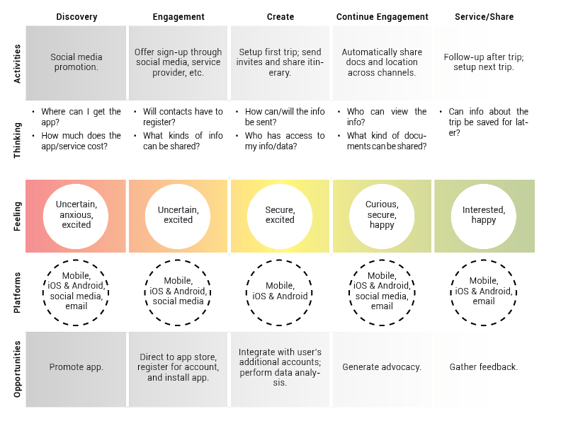
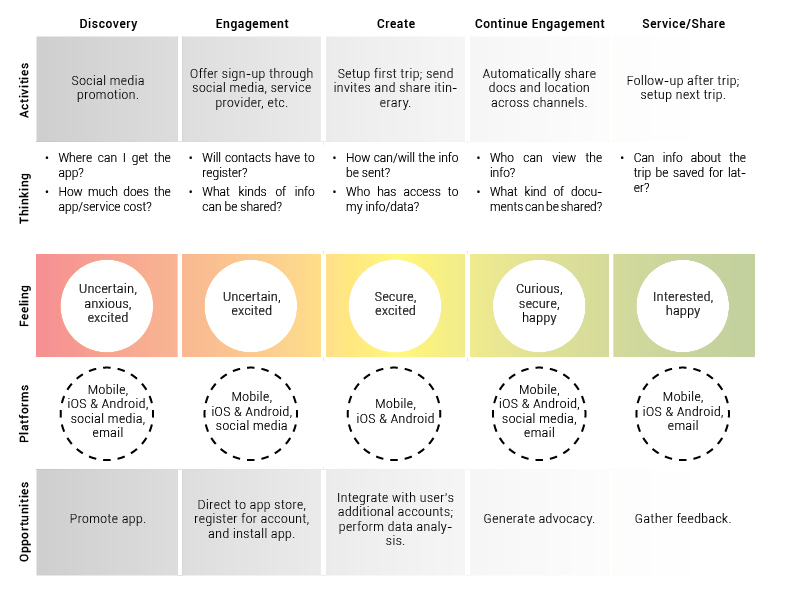
With the initial user research complete, I set upon developing the sitemap and overall user flow.
Creating the sitemap was an opportunity to document the major touchpoints throughout the app. In effect, the map became a sort of screen inventory for the wireframes and mock-ups that would come later.

As depicted in the image above, the app is basically split into two functions: trip management and itinerary building.
Here .

Here .
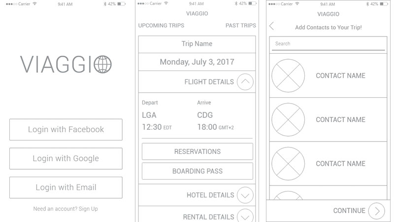Here .
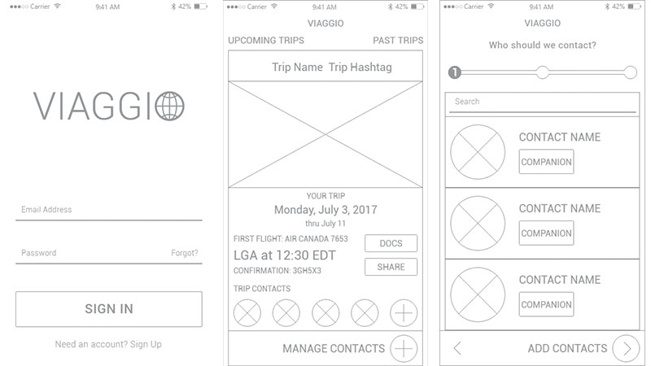Here .
Six people were asked to complete a multitude of tasks using the prototype. As I recorded and compiled each of the participants’ attempts I was discovered a few things about they were trying to interact with my prototype. Half of the users had trouble completing the sign-up process. Four of the six attempted to register a new account via their Google account. Several participants were confused about linking their travel and/or social media accounts to the app. Several participants had trouble navigating the trip itinerary page. Nearly all of the users tested were unclear on the purpose of the check-in function.
Here .
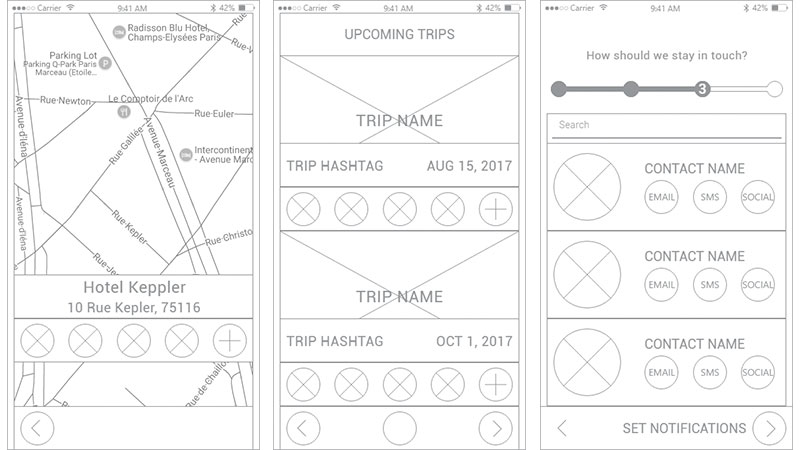The first version of my mock ups.
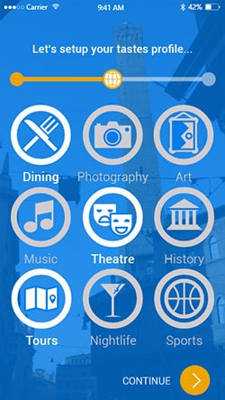 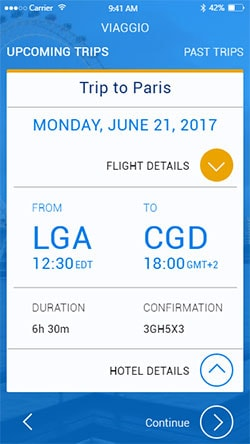The second version of my mock ups.
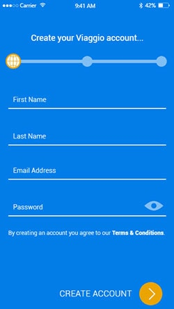 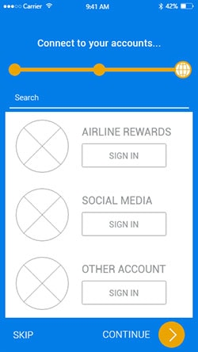 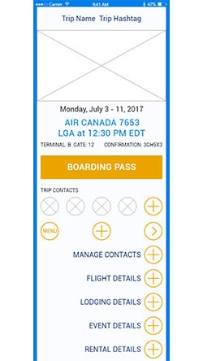The third version of my mock ups.
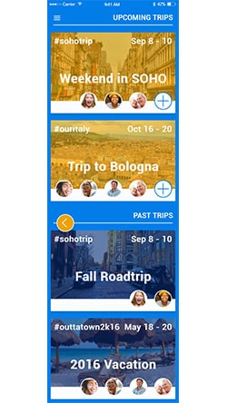 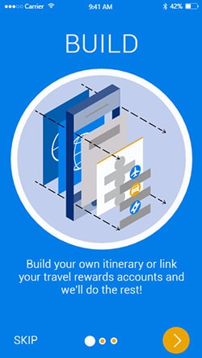 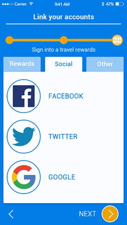 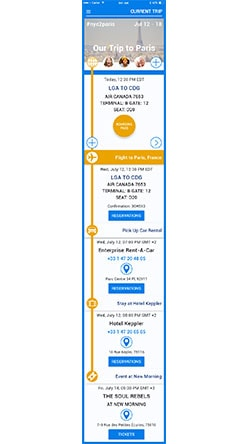The fourth version of my mock ups.
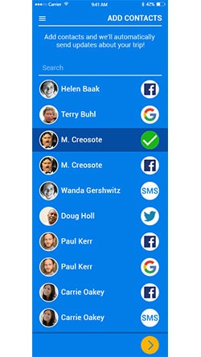 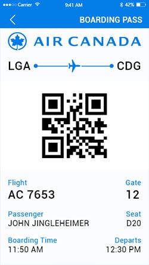 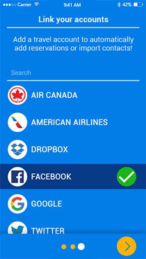 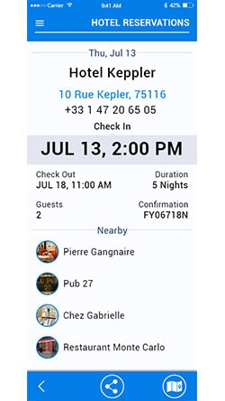Please feel free to take the Viaggio prototype for a test run HERE.
Here .